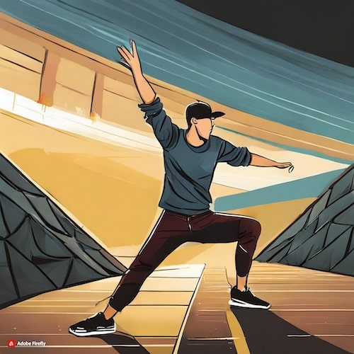

Learning breakdance is not just about acquiring a new set of impressive physical skills; it's a journey that enriches you culturally, socially, and physically. Breakdancing, a pillar of hip-hop culture, offers a unique blend of dance, acrobatics, and music, encouraging self-expression and creativity. It challenges you to push your limits, promoting physical fitness and agility in a fun and dynamic way. As a social dance, breakdancing connects you with a vibrant community of dancers, offering opportunities for collaboration, competition, and mutual growth. Whether you're looking to express yourself, stay active, or just be part of a supportive community, breakdancing has something to offer everyone.
Warm Up

Warming up before dancing
A good breakdancing warm-up is essential, combining cardiovascular exercises, dynamic stretching, and foundational movements. It boosts flexibility, strength, and endurance, prevents injuries, and sharpens focus. Tailoring your warm-up specifically for breakdancing enhances performance, ensuring you're physically and mentally prepared to push your limits creatively and safely.
Dynamic Stretching
Include leg swings, arm circles, and hip circles to increase mobility in the joints.
Wrist and Ankle Circles
Since breakdancing involves a lot of wrist and ankle use, focus on these areas to prevent sprains.
Bridge and Backbend
Gently stretch and strengthen the back, increasing flexibility for moves that require arching.
Master the Basic Moves
Top Rock
The opening act of breakdance routines, performed upright to showcase style, rhythm, and control before transitioning to floor-based moves. It involves a series of steps and movements that allow dancers to engage with the music and audience.
6-Step
A fundamental footwork pattern that involves moving around the ground in a circular motion, using hands and feet. It serves as the backbone for many variations and sequences in breakdancing, emphasizing fluidity and coordination.
Baby Freeze
An introductory freeze move where the dancer supports their body off the ground with the knees tucked close to the chest, using one elbow placed in the abdomen. It's crucial for developing balance and strength for more complex freezes.
Back Spin
A basic power move where the dancer spins on their back, using a kick to initiate rotation. It requires timing and momentum control, serving as a stepping stone to more advanced spinning techniques.
Swipe
An explosive move that involves sweeping one's legs around the body while alternating hands on the floor, creating a spinning motion. It introduces the concept of using momentum to transition between movements.
Windmill
A challenging but essential power move where the dancer spins continuously on their upper back and shoulders, legs splitting and winding in the air. Mastering the windmill requires practice, flexibility, and strength, epitomizing the dynamic athleticism of breakdancing.
Embrace Creativity
Creativity Breakdancing
Embracing creativity in breakdancing is essential for personal expression and innovation. It's not just about mastering the moves; it's about how you stitch them together, add your flair, and interpret the music. Cultivating a unique style sets you apart, turning each performance into a distinctive art piece that captivates and inspires.
Stay Persistent
Persistence in breakdancing is key to mastering this dynamic art form. The journey is filled with challenges, from learning complex moves to overcoming plateaus in skill progression. Staying persistent, embracing every fall as a lesson, and consistently pushing your limits transform these obstacles into stepping stones towards greatness. It’s this unwavering dedication that cultivates not just a breakdancer, but an artist who embodies resilience, passion, and the heart of hip-hop culture.